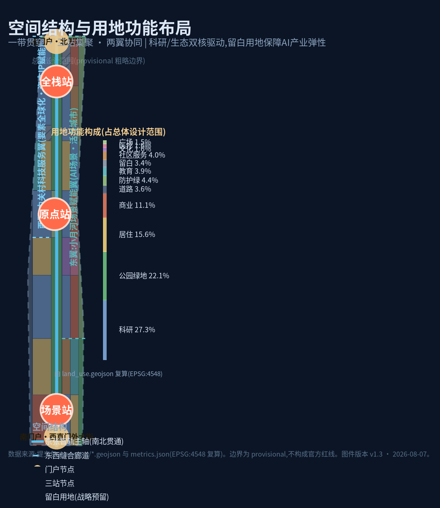
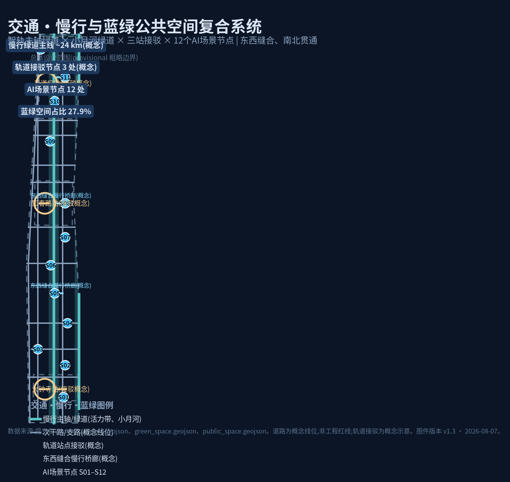
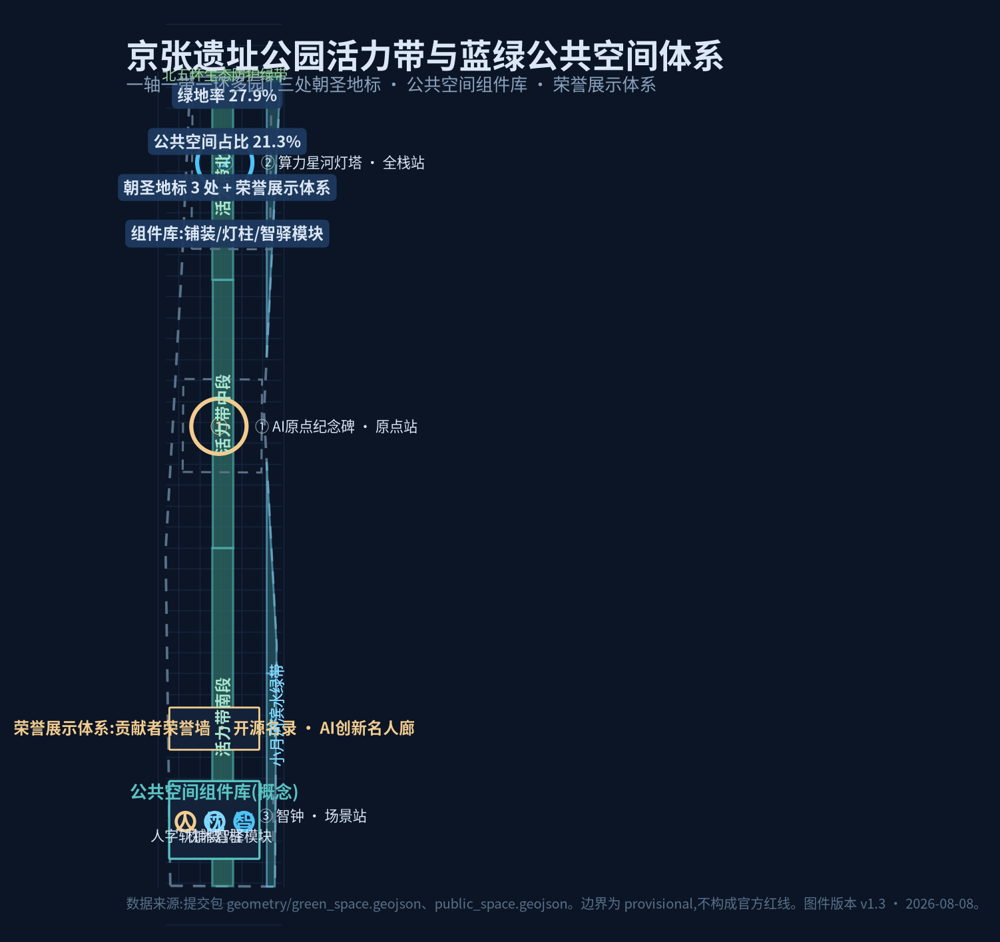
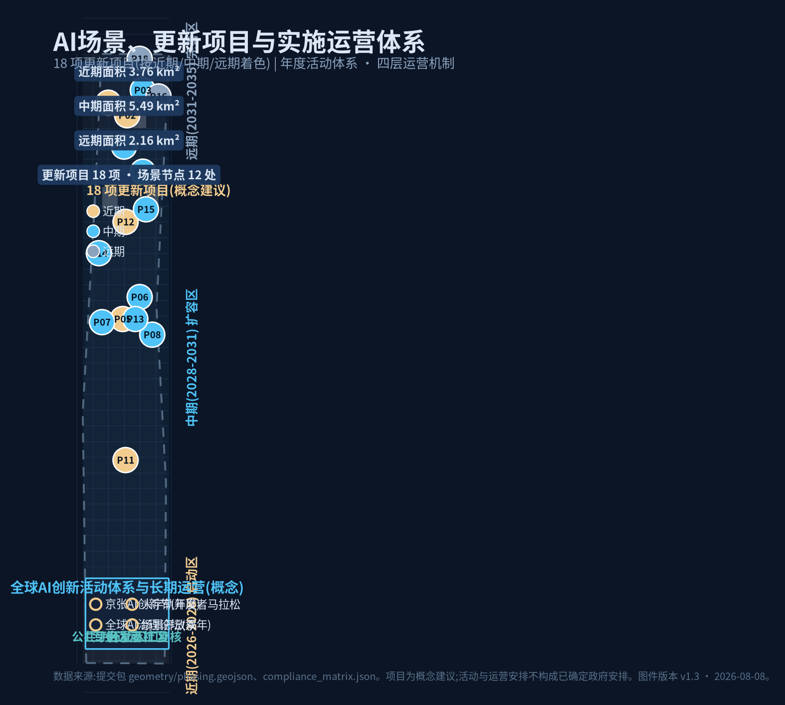
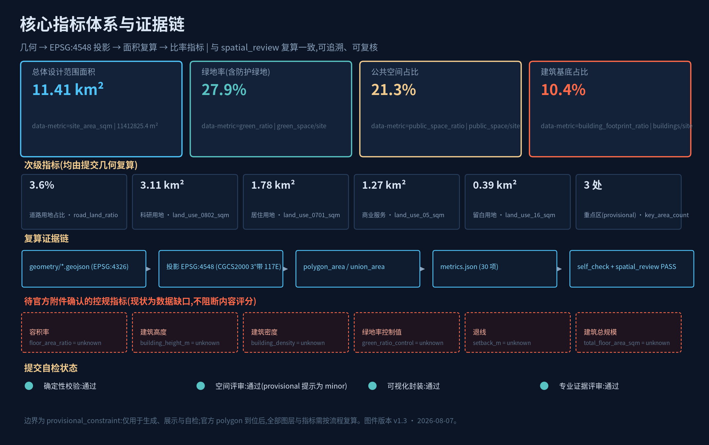
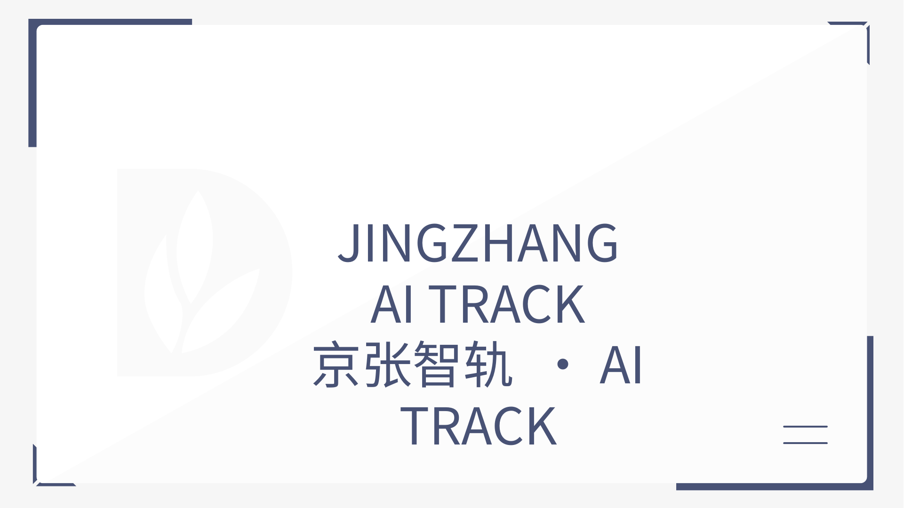
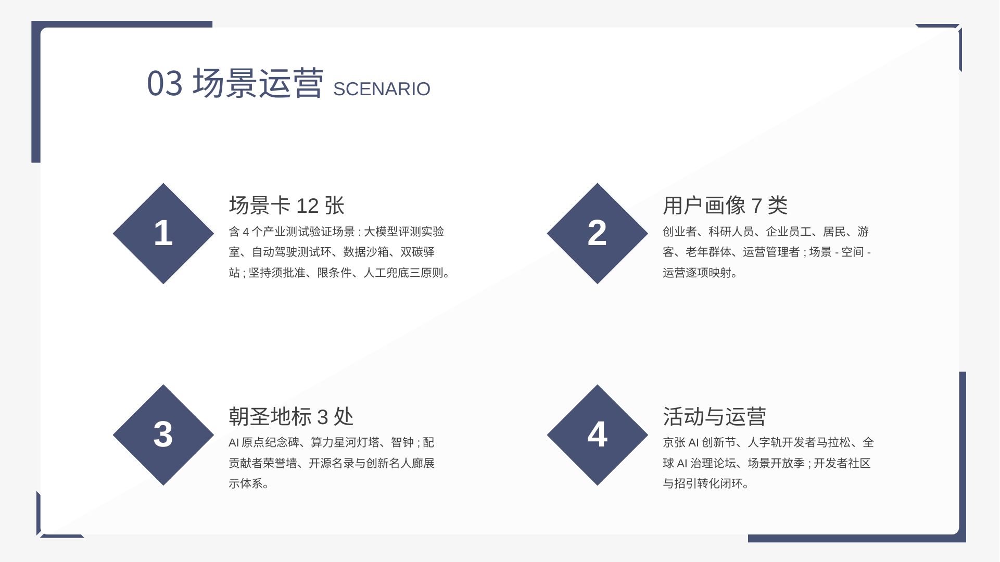
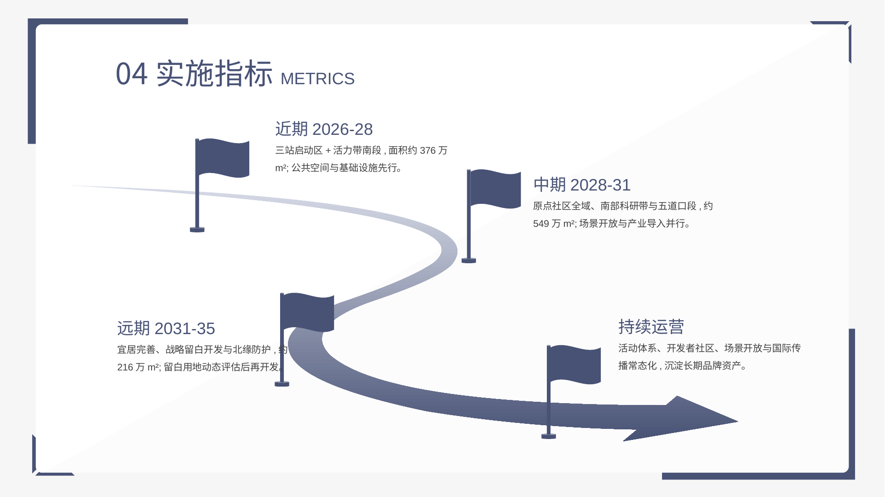

01总览地图 · 总体概念
一带三站两翼多节点 | 京张遗址公园活力带贯穿南北约9.7 km,三处重点区自北向南为全栈站(众智园)、原点站(AI原点社区)、场景站(大钟寺)

北至北五环、东至京藏高速、南至西直门外大街、西至万泉河路(公告四至)。产业战略、区域协同与未来城市形态研究,不直接落用地。
京张遗址公园周边1-2公里。控规深度城市设计:空间结构、用地、更新、交通市政、蓝绿、风貌与指标复算。提交边界为 provisional 粗略替代边界。
众智园(约192.1 ha)、AI原点社区(约104.3 ha)、大钟寺(约72.0 ha)。规划综合实施方案深度详细设计;三处 polygon 为 provisional 粗略占位。

AI全栈自主创新体系+治理话语权;“算力-数据-模型-测试-孵化”纵向链;测试验证场景群;风险:北五环防护、跨河工程、测试批准。
世界级AI创新生态;“原点广场-创新社区-滨水社区”三圈层;原点纪念碑与荣誉展示体系;风险:高校周边更新敏感、权属待确认。
智能原生新业态;“轨道TOD-智能商业-滨水商务”复合;AI消费实验室与智钟地标;风险:枢纽人流组织、TOD工程论证。

| 用地代码 | 名称 | 面积(m²) | 占比 | 设计含义 |
|---|---|---|---|---|
| 0802 | 科研用地 | 3,110,278 | 27.3% | AI研发/孵化/测试验证主体 |
| 1401 | 公园绿地 | 2,519,213 | 22.1% | 活力带与小月河绿带 |
| 0701 | 城镇住宅 | 1,779,283 | 15.6% | 人才居住与存量宜居 |
| 05 | 商业服务业 | 1,271,519 | 11.1% | 三站TOD与创新商业 |
| 16 | 留白用地 | 386,850 | 3.4% | AI产业弹性与战略预留 |
| 其他 | 防护绿/道路/教育/医疗/文化/社区/广场 | 2,345,682 | 20.5% | 配套与蓝绿骨架 |


绿地面积约318.9万m²,支撑都市AI生活体验带的环境基底与人才磁力。
约242.9万m²,支撑创新交往、AI公共体验与活动运营。
锈红×青蓝双色系;人字轨符号系统统一导视、铺装与家具;沿绿带界面通透友好。
低中高梯度、主轴两侧向绿带跌落、站心适度集聚;不给出地块级限高与强度结论。
保留为主(铁路遗址/记忆场所/良好存量)、改造提质(低效产业与商业)、局部新建(三站与两翼门户)、审慎留白。
容积率、建筑高度、建筑密度、退线、建筑总规模:官方控规条件缺失,一律按 unknown 处理。
| 编号 | 项目 | 位置 | 分期 | 说明 |
|---|---|---|---|---|
| P01 | 全栈站开放算力驿站 | 众智园 | 近期 | 算力共享+开发者服务 |
| P02 | 大模型公共评测实验室 | 众智园 | 近期 | 测试验证场景S07 |
| P03 | 自动驾驶接驳测试环 | 众智园北段 | 中期 | 测试验证场景S08,需批准 |
| P04 | 孵化加速中心 | 众智园 | 中期 | 存量楼宇功能置换 |
| P05 | 原点广场 | AI原点社区 | 近期 | 站前广场+公共空间 |
| P06 | 原点博物馆(AI原点记忆馆) | AI原点社区 | 中期 | 文化展示与荣誉展示 |
| P07 | 创新社区微更新 | AI原点社区 | 中期 | 高校周边存量提质 |
| P08 | 滨水社区与小月河步道 | AI原点社区东 | 中期 | 蓝绿+居住融合 |
| P09 | 场景站TOD复合开发 | 大钟寺 | 近期 | 轨道枢纽一体化概念 |
| P10 | AI消费实验室街区 | 大钟寺 | 近期 | 智能原生新业态 |
| P11 | 智驿驿站群 | 主轴三处 | 近期 | 公共空间组件库落地 |
| P12 | 主轴绿道贯通 | 京张遗址公园带 | 近期 | 慢行主轴+遗产展示 |
| P13 | 东西缝合桥廊(3处概念) | 主轴沿线 | 中期 | 慢行桥廊,需工程论证 |
| P14 | 中关村科技服务翼平台 | 西翼 | 中期 | 政策/资本/IP对接 |
| P15 | 数字孪生运营中心 | 东翼 | 中期 | 城市运营+人工复核 |
| P16 | 双碳能源驿站 | 小月河翼 | 远期 | 测试验证场景S10 |
| P17 | 人才公寓与社区服务中心 | 三站周边 | 中期 | 职住平衡配套 |
| P18 | 市政管网数字化与留白开发 | 全带/留白用地 | 远期 | 动态评估后实施 |

空间锚点:主轴绿带/原点社区
运营主体:文旅运营方+开发者社区
隐私与人工复核:公开文化资料,匿名化;人工复核讲解内容
空间锚点:三站TOD
运营主体:交通运营主体
隐私与人工复核:出行数据脱敏;人工复核调度策略
空间锚点:智能商业街区/原点社区
运营主体:商业运营+安全员
隐私与人工复核:限定区域与速度;急停与人工复核
空间锚点:社区服务设施
运营主体:医疗+社工复核
隐私与人工复核:医疗数据不出驿站,本地处理
空间锚点:产业带
运营主体:产业服务平台
隐私与人工复核:企业数据授权使用;人工复核关键结论
空间锚点:数字孪生运营中心
运营主体:城市运营主体
隐私与人工复核:按公共安全规范管理;全流程留痕
空间锚点:全栈站
运营主体:公共评测机构
隐私与人工复核:测试数据脱敏与授权;结果公开评审
空间锚点:全栈站北段
运营主体:测试运营+安全员
隐私与人工复核:须经批准;限定环线时段;人工接管
空间锚点:全栈站
运营主体:联合实验室
隐私与人工复核:数据不出域;隐私计算+人工审计
空间锚点:小月河翼
运营主体:能源运营主体
隐私与人工复核:公共计量数据;人工复核控制策略
空间锚点:全带
运营主体:城市运营主体
隐私与人工复核:与S06共用人工复核机制
空间锚点:场景站/原点社区
运营主体:市民+师生+开发者
隐私与人工复核:版权与内容审核;教育内容教师人工复核;承担AI素养教育与青少年科普
需求:低成本算力、测试环境、融资对接、开发者社区
空间回应:孵化加速器、智驿24小时空间、开放算力驿站
需求:实验室、数据沙箱、学术交流
空间回应:科研用地圈层、原点社区
需求:办公、通勤、餐饮健身
空间回应:产业带15分钟服务圈
需求:宜居环境、社区服务、公共空间
空间回应:居住圈层、社区公园
需求:AI文化体验、导览、地标打卡
空间回应:朝圣地标、AI文化导览
需求:适老服务、人工窗口兜底
空间回应:AI健康驿站、社区服务
需求:运行感知、事件处置、人工复核
空间回应:数字孪生运营、公共安全复核
位置:原点站
人字形展线雕塑母题,纪念1909自主创新起点与AI原点精神
位置:全栈站
面向北五环门户的算力/数据可视化地标
位置:场景站
大钟寺历史意象与AI数据流结合的公共艺术装置
位置:原点社区/主轴
贡献者荣誉墙、开源贡献者名录、AI创新名人廊
1909年京张铁路人字形展线(自主创新起点)→ 2026年AI自主创新带;铁路连接北京与张家口,AI连接全球开发者;老站房→智驿,枕木→数据流,锈红铁轨→青蓝算力。
年度活动:京张AI创新节、人字轨开发者马拉松、全球AI治理论坛、场景开放季;开发者社区线上+智驿线下;场景开放运营与数据沙箱公益化;国际传播与招引转化闭环。均为概念建议。
24小时智驿与低成本共享工位、青年公寓、沿主轴夜跑径与街头运动场地;青年共创计划、开发者马拉松与贡献荣誉墙联动;青年友好贯穿公共空间组件库与活动体系。
| 任务编号 | 任务名称 | 状态 |
|---|---|---|
| 1.3.1 | 构建世界级AI创新生态体系 | 已覆盖 |
| 1.3.2 | 建设适配AI新质生产力的新型城市形态 | 已覆盖 |
| 1.3.3 | 打造全球AI创新人才向往的高品质城区 | 已覆盖 |
| 1.4.1 | 统筹研究范围 | 已覆盖 |
| 1.4.2 | 总体设计范围 | 已覆盖 |
| 1.4.3 | 重点区域范围 | 已覆盖 |
| 1.5.1.1 | 统筹研究范围:AI创新生态体系 | 已覆盖 |
| 1.5.1.2 | 统筹研究范围:适配人工智能的未来城市形态 | 已覆盖 |
| 1.5.2.1 | 总体设计范围:产业目标与功能布局 | 已覆盖 |
| 1.5.2.2 | 总体设计范围:城市更新总体框架 | 已覆盖 |
| 1.5.2.3 | 总体设计范围:交通轨道市政配套设施 | 已覆盖 |
| 1.5.2.4 | 总体设计范围:京张遗址公园活力带 | 已覆盖 |
| 1.5.2.5 | 总体设计范围:城市风貌 | 已覆盖 |
| 1.5.3.required | 重点区域详细设计必选项 | 已覆盖 |
| 1.5.3.1 | 众智园AI自主创新加速区 | 已覆盖 |
| 1.5.3.2 | 北京AI原点社区 | 已覆盖 |
| 1.5.3.3 | 大钟寺AI产业聚集区 | 已覆盖 |
| agent.1 | 一带总体概念与功能统筹方案设计 | 已覆盖 |
| agent.2 | AI全栈自主创新体系与世界级AI创新生态设计 | 已覆盖 |
| agent.3 | AI+场景赋能新范式与智能化AI活力城市设计 | 已覆盖 |
| agent.4 | AI公共空间、智能原生新业态与朝圣地标设计 | 已覆盖 |
| agent.5 | 百年京张文化、中关村文化与AI新文化融合叙事设计 | 已覆盖 |
| agent.6 | 一带全球AI创新活动体系与长期运营设计 | 已覆盖 |
PASS
文件结构/JSON模式/GeoJSON属性/指标/矩阵/正文证据引用
PASS
用地覆盖无缝隙无重叠;重点区互不重叠;指标与几何复算一致
PASS
静态离线HTML;必查指标与metrics.json一致
PASS
标准/深度/图层/指标/来源全部可读引用
| 来源编号 | 标题 | 发布方 | 用途类别 |
|---|---|---|---|
| OFFICIAL-ANNOUNCEMENT | 百年京张AI创新带城市设计国际方案征集资格预审公告 | 官方公告 | formal可用 |
| AGENT-TASKBOOK | 面向全球智能体开源征集任务书摘录 | 用户提供清权 | formal可用 |
| SITE-PACKAGE | 站点资料包 brief/site-package | 仓库维护者 | formal可用 |
| SOURCE-REGISTRY | 公开资料登记表 | 仓库维护者 | formal可用 |
| PROCESSED-FACT-PACK | Agent事实包与处理资料 | 仓库维护者 | formal可用 |
| PROVISIONAL-BOUNDARY | 三层范围与重点区临时粗略polygon | 仓库维护者 | provisional-only |
| PROVISIONAL-BOUNDARY-BASIS | 临时边界推定与核查说明 | 仓库维护者 | provisional-only |
| MOHURD-URBAN-DESIGN-MEASURES | 城市设计管理办法(2017) | 住建部 | formal可用 |
| MOHURD-CONTROL-DETAILED-PLANNING | 城市、镇控规编制审批办法 | 住建部 | formal可用 |
| MNR-LAND-USE-CLASSIFICATION | 用地用海分类指南(2023) | 自然资源部 | formal可用 |
| BEIJING-KW-THREE-AREAS-WINGS | “三区两翼”打造世界级AI集聚地 | 市科委/中关村 | 背景资料 |
| HAIDIAN-1X1 | 海淀区“1+X+1”产业体系建设布局 | 海淀区政府 | 背景资料 |
| 编号 | 假设内容 |
|---|---|
| A-CONTROLS-001 | 官方控规指标未包含在公开资料包中,取得前一律按 unknown 处理 |
| A-BOUNDARY-001 | 总体边界为 provisional 粗略替代边界,仅用于生成/展示/自检 |
| A-KEYAREA-001 | 三处重点区为 provisional 矩形占位,不表达地块边界或权属 |
| A-BUILDING-001 | 建筑基底为概念体块,非现状实测或审批规模 |
| A-ROAD-001 | 道路为概念线位,非工程红线 |
| A-STATION-001 | 轨道接驳节点为概念假设,不代表已确定线位或选址 |
| A-SCENARIO-001 | 场景卡与更新项目均为概念建议,不视为已批准运营 |
| A-DATA-001 | 现状诊断基于公开背景资料,缺少官方底数 |




